日期：2026-10-17。状态：可供外形与静态装配人工评审。基于V3已确认骨架，优化船首外飘、球鼻过渡和艉部收流，补充舭龙骨、轴桨舵示意、锚孔凹口与甲板边过道。历史V3文件不覆盖；本版没有制作锚本体、炮台、飞机及其他可后装小件。
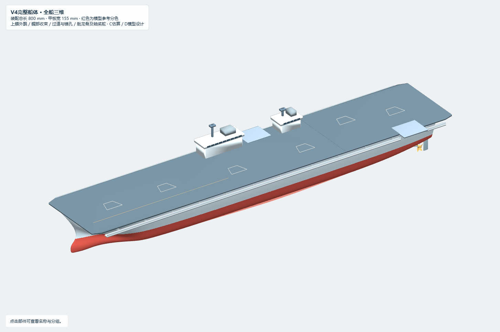
用户提供的9张图片均为模型/CGI截图，只有8个唯一内容：R02与R01完全重复。图片可帮助选择更自然的外形和附体外观，不能证明真实076采用相同水下型线、双轴双桨双舵数量或具体尺寸。水印作者及原始发布链接尚未核实；原图逐张保留于references，并登记SHA256。
| 事项 | 级别 | 本轮处理 |
|---|---|---|
| 双舰岛、电磁弹射及阻拦技术 | A 官方确认 | 官方报道只用于外部身份/特征核查，不证明水下结构 |
| 800 mm总长 | 项目约束 | 不对应已确认的实舰精确总长 |
| 260 m缩尺参考、155甲板宽、86/46/31舰岛、52×43升降机 | C 估算工作值 | 继承工作值；不同公开尺度冲突不消除；具体位置仍为D |
| 本轮9张图片（8个唯一内容） | D 模型视觉参考 | 全部为他人模型/CGI截图；作者水印和原始发布链接未独立核实 |
| 球鼻、舭龙骨、双轴双桨双舵、锚孔和过道尺寸/坐标 | D 模型假设 | 依据模型空间约束选取，不是实舰测量结果 |
| 实舰水下型线、轴桨舵数量和精确布置、设计吃水 | Unknown | 本轮没有新增可将这些未知项升级为A/B的证据 |
| 龙骨、14片肋骨、双横板、机库和电控预留 | D 模型结构 | 用户确认的模型拼装设计，非实舰内部复原 |
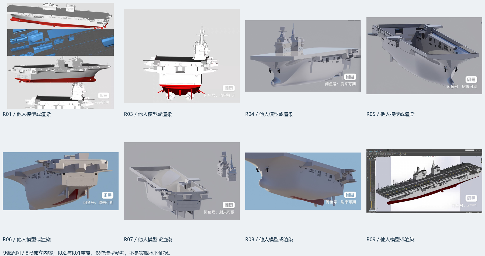
| 部位 | 变化 | 保留及限制 |
|---|---|---|
| 船首与上部舷侧 | 扩大艏部上层外飘，消除旧版宽甲板下面过窄、过尖的视觉；重新协调球鼻与艏柱 | 甲板高度、甲板轮廓和800 mm长度保留；上部半宽控制值54–69 mm均为D |
| 水下船首 | 用共同NURBS控制网调整低位球鼻及横剖面；在X160共同接口保持位置/一阶/二阶参数导数一致 | 未粘接独立球体；接口C2证据不等于全船所有接缝G2 |
| 中后体与艉端 | 上部外飘整体协调；局部抬升艉部外侧收流，重新生成横艉参考面 | 本版允许母面更新，中后体不再声称与V3完全相同；中心底线保持连续 |
| 骨架及双横板 | 14片肋骨、龙骨与板轮廓按新母面更新 | 下板Z19–22、上板Z44–47及原站位保留；三维静态评审，不是切割稿 |
| 锚孔 | 两侧真实移除母面参数单元，增加口缘、短凹壁和后壁 | 不是仅贴黑色标记；尚非贯通锚链筒、锚链舱或水密开口 |
| 甲板边过道 | 左右分段走道、低围板与三角支撑；在两处升降机附近断开 | 不添加栏杆等小件；楼梯/通达与承载待设计 |
| 舭龙骨 | 两舷沿当前母面根线布置、两端渐收 | NURBS参考薄面，标称0.8 mm尚未实体化 |
| 模型轴桨舵 | 两套倾斜轴、轴套、轮毂、各5片扭转桨叶、支架、舵叶/舵轴及中央艉鳍 | 数量、位置、尺寸全部D；桨叶/支架仍含参考薄面，未完成真实动力系统安装 |
| 参数 | 采用值 | 依据/解释 |
|---|---|---|
| 总长 | 800 | 项目约束；完整装配原生X范围0–800 |
| 甲板 | 宽155，Z76–79.0 | 估算宽度工作值；与V3同几何 |
| 参考高度 | 32 | D显示参考；不是设计水线/吃水 |
| 球鼻控制长度/高/宽 | 115 / 20 / 20 | D控制参数，不是实舰尺寸或几何包围盒 |
| 球鼻最大宽/高控制位置 | X45 / X52 | D；完整控制参数见JSON及包内bulb_parameters |
| 锚孔位置 | X52，Z53，两侧镜像 | D；UV半窗0.0045×0.018，短凹深4 |
| 走道 | X24–778，|Y|77–85，底板Z69–72 | D；围板高3.5、厚0.8；避让升降机 |
| 舭龙骨 | X220–640，最大外伸3.5 | D；沿v=0.34母面参数根线，两端渐收 |
| 桨中心 | X758，Y±28，Z4.5 | D；2桨，各5叶，直径22 |
| 轴起点 | [722, ±28, 18] | D；轴半径0.85，外轴套半径1.5 |
| 舵叶 | X767–777，Z−7–16，Y±28 | D；舵轴X769、半径1、顶端Z25 |
| 下/上横板 | X600–775, Z19–22 / X190–775, Z44–47 | 用户确认的位置保留，平面轮廓按当前母面重算 |
| 木板/配合槽 | 3 / 3.12 | D；槽宽=板厚+配合余量0.12；刀缝0.15供刀路补偿，不再重复从几何槽宽扣除 |
UPPER_FLARE_TARGET与AFT_SECTION_LIFT是沿15行原控制网的参数，不是15个实测站剖面。其X参考行依次为4、20、45、80、120、180、260、360、460、560、640、700、740、768、776；实际B样条曲面不逐点穿过这些控制值。修改参数须协调关联尺寸，非所有输入均可独立任意改动。
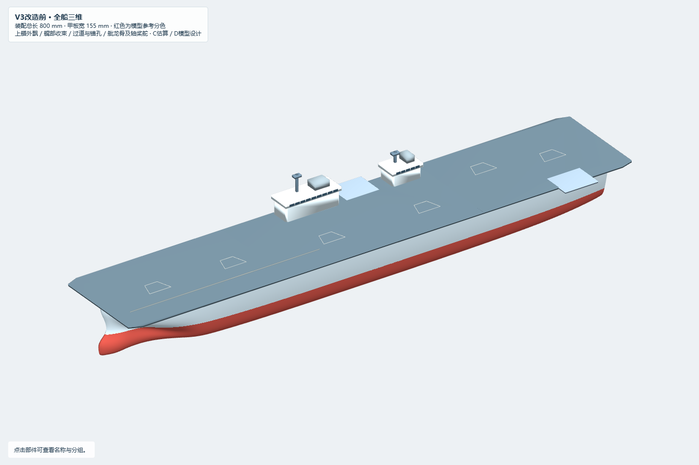
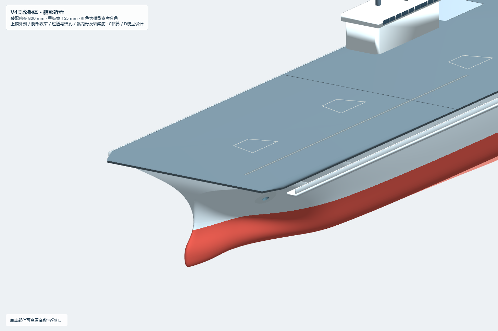
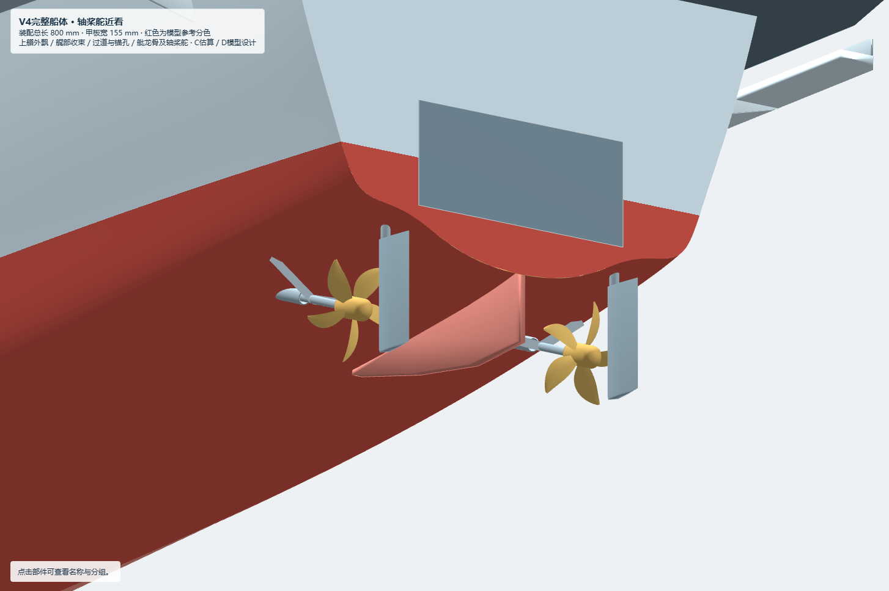
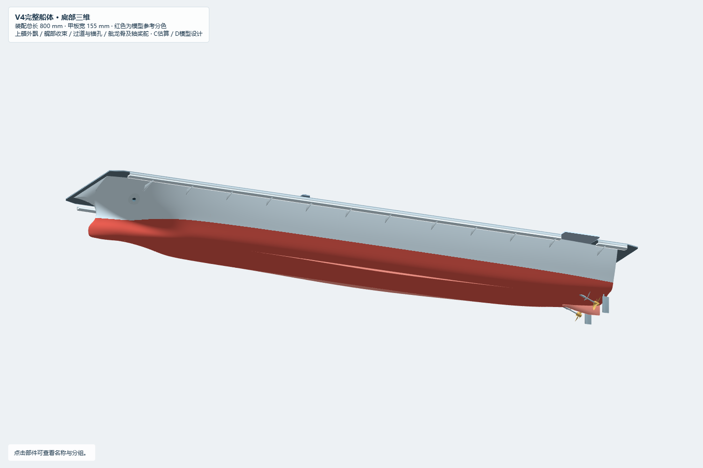
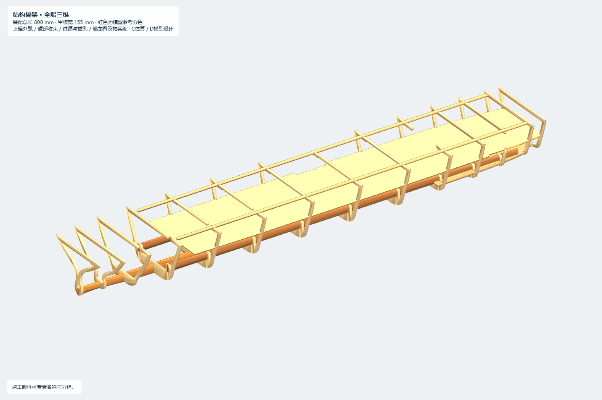
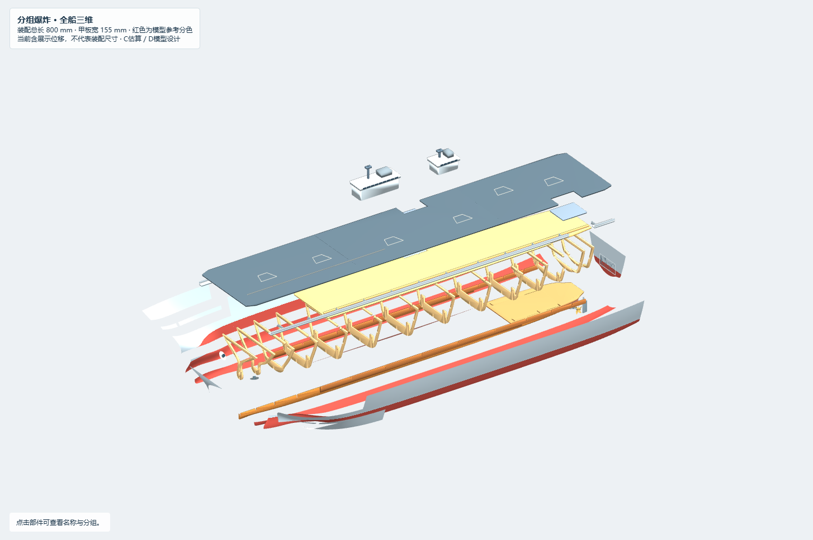
| 检查 | 结果 | 解释 |
|---|---|---|
| 保存文件回读 | 208 / 31 / 208对象，全部有效，单位mm，零Mesh | 装配/骨架/爆炸各5个命名视图；网页显示用三角化不属于原生Mesh |
| 总长与甲板 | 装配800 mm，甲板Z76–79 | 爆炸位移后的包围盒不是装配总长；42个继承外部对象Encode一致 |
| 母面采样/镜像 | 前后体各13029内部样本，正则性通过；镜像误差0 | 仅数学采样及本生成器一致性，不是实舰还原精度 |
| X160接口 | 位置差约5.68e−14 mm，二阶参数导数差<1e−6 | 共同参数接口局部C2，不覆盖横艉/口缘/附体连接 |
| 结构和过道 | 58个连通封闭显示实体 | 与11个封闭运行机构显示体合计79对候选检查，未发现>0.0001 mm³交叠；不含所有薄面/机构内部预期连接 |
| 桨完整旋转包络 | 19467点，最小同XY竖向间距0.7235 | 依据显示桨叶采样包络；不是严格全原生点最短净空，也不是制造裕量 |
| 锚孔/舵轴 | 双侧母面缺口存在；凹壁避开首肋；舵轴距末肋0.5 | 舵轴底与舵叶静态接触、顶端跨入壳内；无轴承/密封安装设计 |
| 离线网页 | 80次视图检查、192次轨道旋转检查通过 | 两种窗口尺寸；无脚本错误、无HTTP请求，开关/旧新叠加/恢复视图通过 |
| 原生Rhino桌面/Zebra/完整自交/裸边 | NOT_CHECKED | 本机未操作Rhino桌面；数学反射条纹图不冒充Rhino Zebra |
| 封闭水密/制造/强度/浮态 | 未验证 | 本轮交付不具备制造或下水放行状态 |
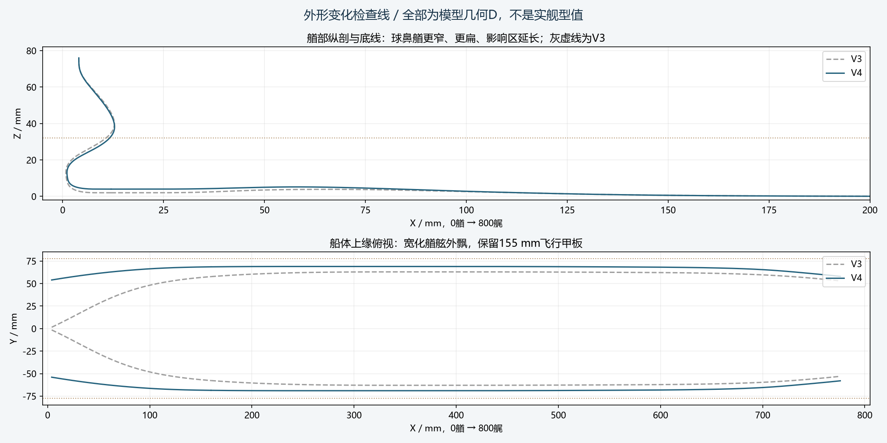
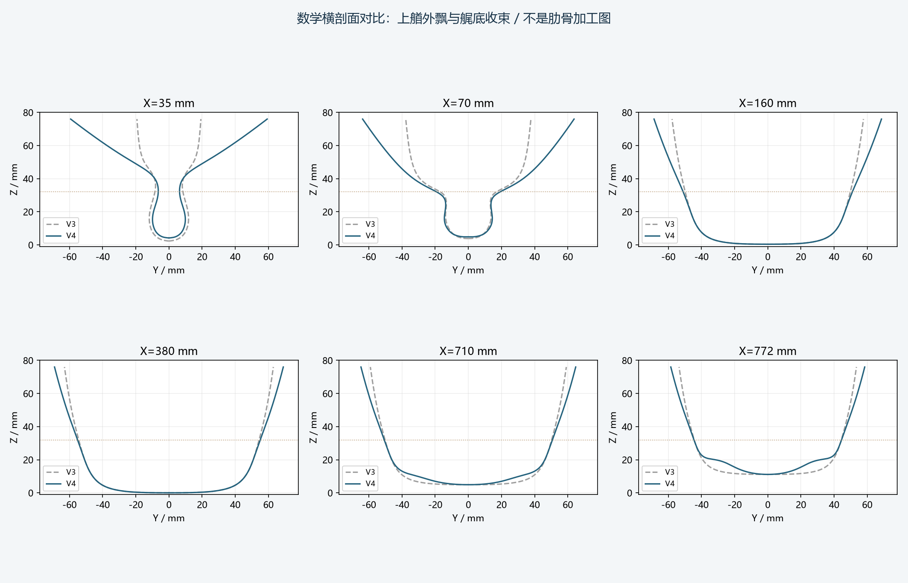
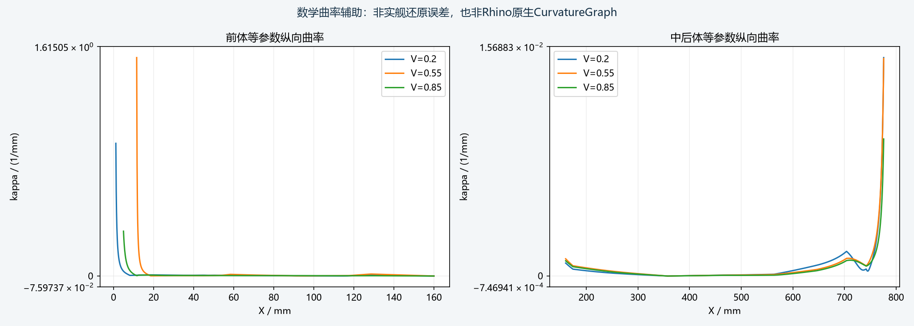
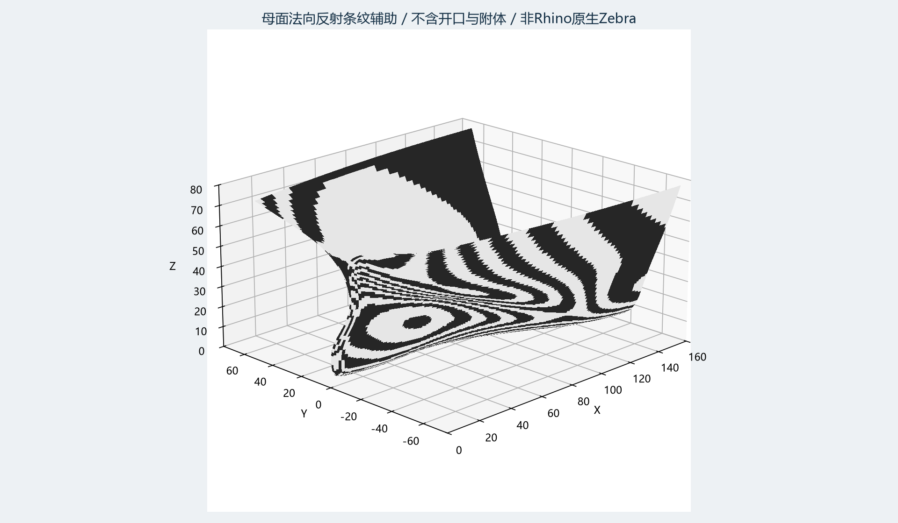
1.25 mm肋骨内缩仍未与3 mm实际蒙皮、弯曲半径及胶层协调。蒙皮仍为独立参考曲面；舭龙骨、桨叶、支架等未全部厚化，整体不是封闭水密壳。当前未验证所有裸边、全局自交、实体Join、实际穿装路径和板材加工极限。
轴桨舵仅建立可编辑外形与空间示意。现有电机预留不等于轴线已连通电机；尚无电机座、联轴器、密封轴管、舵机连杆、轴承与防水方案。0.7235 mm采样间距不能用于选择实物桨或蒙皮厚度。
人工优先确认：艏部外飘与球鼻是否接近希望的视觉；舭龙骨长度/高度；过道外伸与断口；桨舵大小及数量是否作为模型功能方案保留。确认外形后，再协调3 mm蒙皮与骨架、实际硬件尺寸、最短净空和制造装配，随后另建水密分析副本评估重量与浮态。锚本体、炮台等小件继续后置。
网页为自包含离线HTML，直接双击打开；用V4/V3、骨架、分组爆炸切换显示，用部件开关、半透明及预留体查看结构；旋转或缩放后可点击恢复视图。显示着色在Z32分界，原生Rhino保持灰色参考材质；两者来源于同一几何参数。